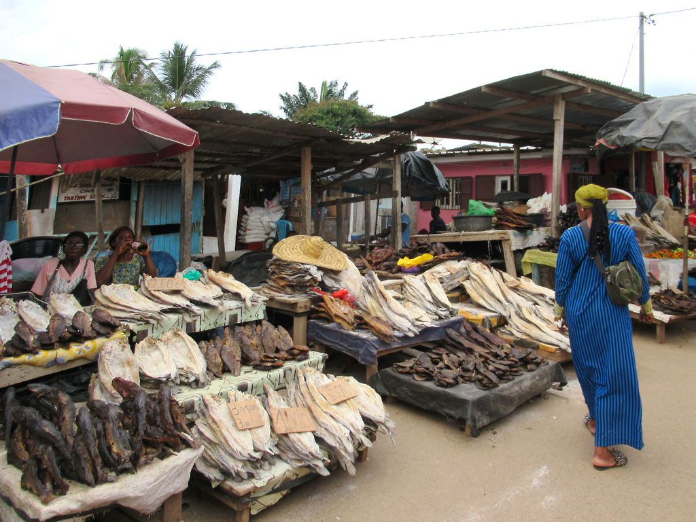

Les étals du marché central font peau neuve : réfection de la toiture, nouveau revêtement de sol, amélioration de l'assainissement et création d'une zone froide pour les produits frais.
Principal pôle commercial de la province, le marché de Koula-Moutou accueille chaque jour des centaines de vendeuses et de vendeurs. Les travaux visent à offrir de meilleures conditions d'hygiène et de sécurité, tant pour les commerçants que pour les clients.
Un outil au service des commerçants
La nouvelle zone réfrigérée permettra de conserver poissons, viandes et produits maraîchers, limitant les pertes et améliorant la qualité des denrées proposées. Des allées élargies et un meilleur écoulement des eaux faciliteront la circulation, y compris en saison des pluies.
La mairie a associé les associations de commerçants à la conception du projet et prévoit un dispositif de gestion concertée des emplacements une fois les travaux achevés.